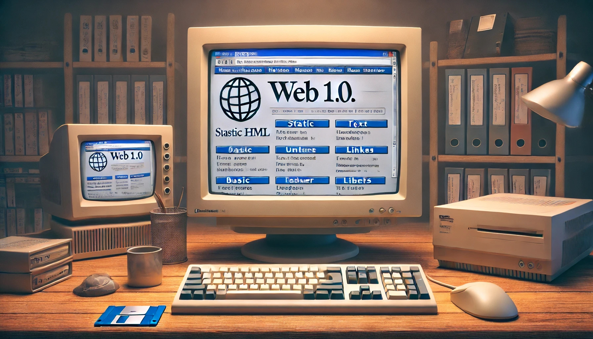

¿Qué fue la Web 1.0?
La Web 1.0 fue la primera etapa del desarrollo de Internet. Se caracterizaba por páginas estáticas, donde el usuario solo podía leer información. No existía interacción ni comentarios.
Volver al inicioLa Web 1.0 fue la primera etapa del desarrollo de Internet. Se caracterizaba por páginas estáticas, donde el usuario solo podía leer información. No existía interacción ni comentarios.
Volver al inicio